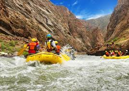
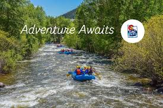
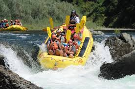

At River Rush Adventures, our mission is to inspire a love for the outdoors and deliver unforgettable whitewater experiences for families, thrill-seekers, and nature lovers alike.

River Rush Adventures
History
White water rafting has a rich history that dates back to the early 19th century. It began as a means of transportation and exploration in rugged terrains, evolving into a popular recreational activity.
In Uganda, white water rafting gained popularity in the late 20th century, particularly on the Nile River. The river's challenging rapids and stunning scenery make it a prime destination for adventure seekers.
Today, Uganda is known for its world-class rafting experiences, attracting both local and international enthusiasts. The country's commitment to safety and environmental conservation has helped maintain its reputation as a top rafting destination.
Adventure Awaits You!
 